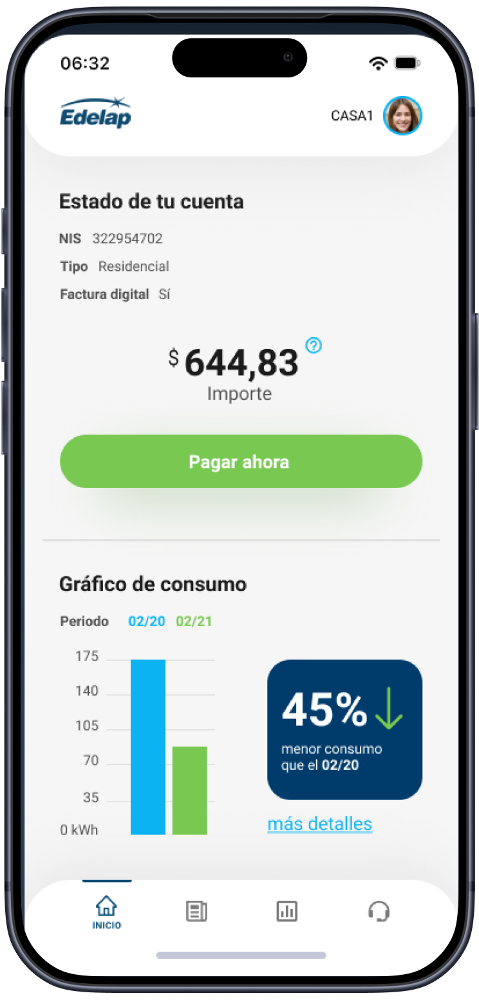
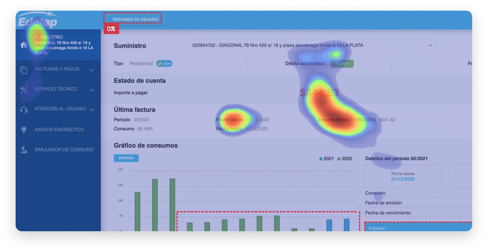
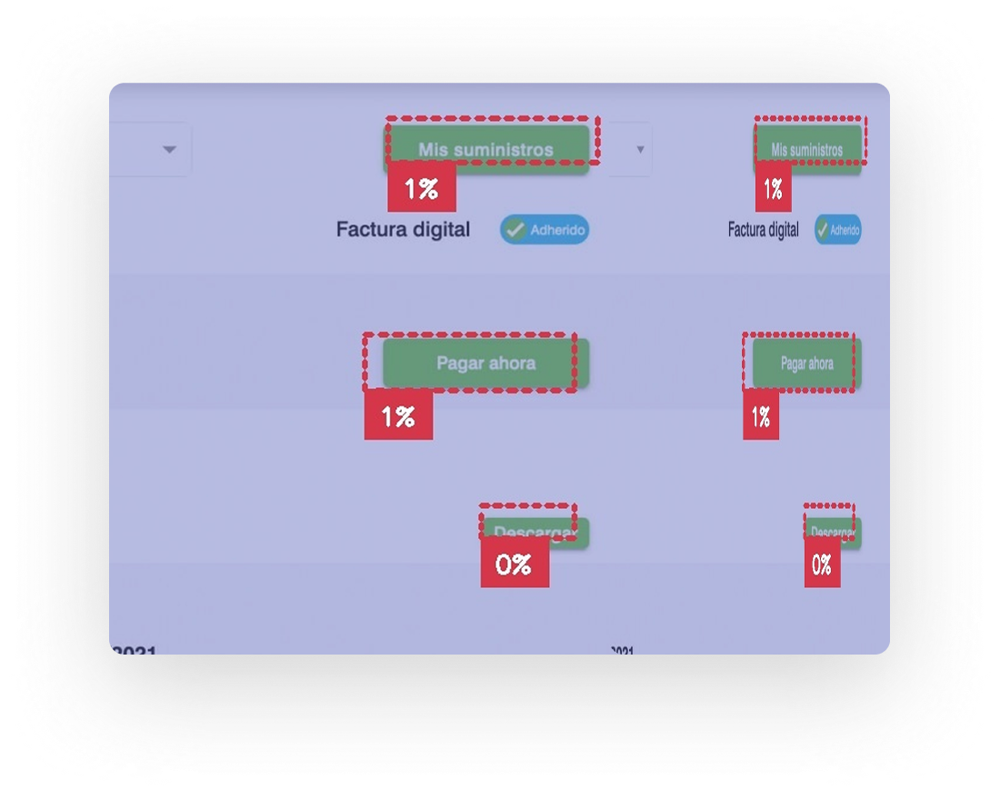
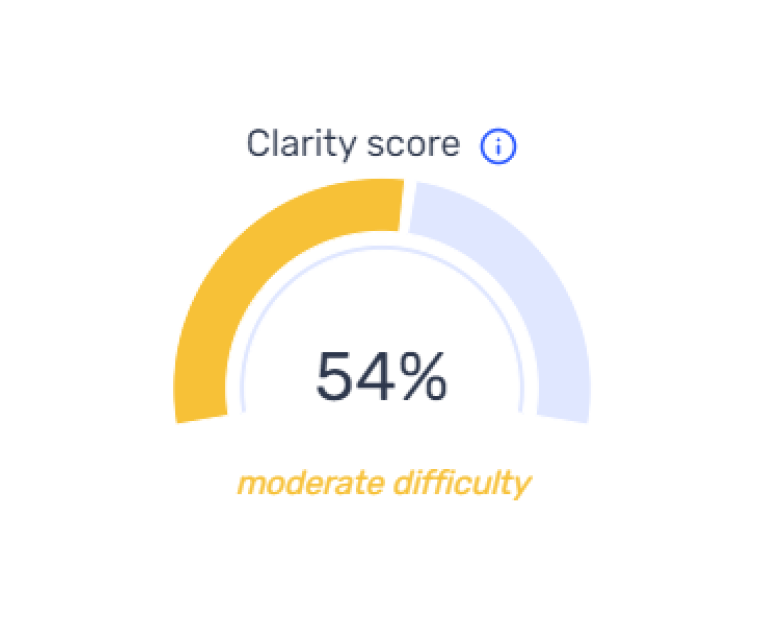

Redesigning the mobile core for a leading energy provider in Argentina.
I streamlined complex billing flows and payment architectures to drive
digital adoption and reduce support friction.
Product DesignerUX/UIResearch

The Strategic Challenge
The legacy virtual office suffered from systemic usability and accessibility
gaps that hindered the service experience. To transform this into a
high-performing mobile tool, I led a diagnostic audit focused on three
critical questions:
What are the critical friction points in the current user journey?
How can we accurately measure the impact of these inefficiencies?
Where should we focus our design efforts to drive the most value?
Attention Metrics
Heat Map
It only recognizes the area of the amount to be paid and ignores the rest.

Attention Percentage
Doesn't exceed 1% of attention

Clarity Metrics
Moderate difficulty

Optimal Workshop
Card Sorting
The results exposed a fundamental dissociation: the existing Information Architecture
didn't reflect how users naturally categorize energy services. This validated the need
for a complete navigation overhaul to reduce cognitive load.
Information
Supply
Bills & Payments
Technical Support
Customer Service
Energy Advisor
Cost Simulator
Consumption
71%
29%
Supply
71%
29%
Address & ID
43%
14%
29%
14%
Account Statement
43%
14%
43%
Amount Due (Total)
43%
43%
14%
Download Invoice
100%
Digital Invoice
86%
14%
Direct Debit
14%
71%
14%
Last Invoice
14%
71%
14%
Last Invoice Period
14%
71%
14%
Amount Due by Cutoff Date
29%
57%
14%
Consumption Chart
29%
43%
29%
Heuristic Evaluation
I performed a heuristic evaluation to uncover systemic flaws hindering the user experience.
This qualitative diagnosis identified high-friction areas where the interface failed to
communicate clearly with the user, setting a clear roadmap for the redesign.
Description
Location
Violation
Severity
Buttons across the screen vary significantly in size with no consistent visual relationship between them, creating confusion and making it difficult for users to orient themselves spatially.
Supply Screen
Consistency & Standards
3 Major
Using the same color for all buttons undermines visual hierarchy. The absence of a highlighted CTA leaves users without a clear sense of direction. The primary action should be reinforced with a distinctive color to differentiate it from secondary buttons.
Supply Screen
Aesthetic & Minimalist Design Consistency
3 Major
A button placed where a title is expected, combined with inconsistent color and positioning compared to other buttons, renders it practically invisible to the user.
Header / User Summary
Consistency & Standards Aesthetic Design
2 Minor
Two checklist icons enclosed in a pill shape strongly resemble a toggle switch, but clicking reveals they are text labels. There is no effective visual feedback to clarify their behavior. Users already associate that pattern with a switch — there is no need to reinvent it.
Supply Screen / Housing Type / Digital Invoice
Consistency & Standards Aesthetic Design
2 Minor
Clicking the "Supply" button navigates to a screen showing a list of supplies under the user's name — the same information already available as a dropdown on the previous screen. No new information is provided, and the button only adds unnecessary visual clutter.
Supply / My Supplies
Consistency & Standards Aesthetic Design
2 Minor
When clicking the "Join" button, the label does not clearly communicate what action will be performed or what the user is committing to. The term lacks contextual meaning, creating ambiguity about the outcome of the interaction.
Supply / Join / Popup
Consistency & Standards Aesthetic Design
2 Minor
Interviews
The discovered insights are valuable for improving the current product, for future versions or new services.
🙍♀️
Carolina
"I get lost"
"I rarely use the website because I almost always end up lost.
I prefer other payment platforms."
🙍♂️
Alexander
"I can't find specific things"
"I don't like the way they handle the app. It's hard for me to find
specific things. I usually use some other external app."
What did we find?
In failures, we find opportunities. Some of them are the following:
✕
There is no consistency in the information architecture.
✓
Organize the menu by prioritizing the most used actions.
✕
Doesn't follow UI design pattern standards.
✓
Provide clarity to the main CTA.
✕
Information in a language unfamiliar to the user.
✓
Write text content employing a more user-friendly language.
✕
There is no hierarchy of typography, colors or shapes.
✓
Use of Color Theory, Gestalt, UX Writing.
It's time for UI Design
Based on the findings, we will put together the most clear,
intuitive and accessible system.
Digital Wireframes — Mobilesrc="assets/images/wireframes_mobile.png"
Digital Wireframes — Desktopsrc="assets/images/wireframes_desktop.png"
Typeface
pp — Lato Regular 16px (1rem)
LabelLabel — Lato Medium 16px (1rem)
H1H1 — Lato Bold 28px (1.75rem)
H2H2 — Lato Regular 24px (1.5rem)
Colors
Components
By grounding the Information Architecture in user insights, I removed the guesswork from
the UI phase, ensuring a seamless transition into a scalable component library.
To minimize cognitive load and accelerate decision-making, I restructured the primary
navigation by aligning the architecture with the user's mental model. By categorizing
high-frequency tasks, I ensured the interface remains intuitive without overwhelming
the user with complexity.
Final Design
Nested Settings:
Address and supply management are nested within the profile to declutter the main interface.
Primary Focus:
The balance due is the clear visual focal point, supported by helpers for immediate status clarity.
Ergonomic CTA:
Placed adjacent to the balance in the universal 'thumb zone' (Fitts' Law) for universal reach and faster completion.
Balanced Insights:
Home screen shows a high-level YoY comparison, linking to detailed analytics for power users.
Outcomes & Impact
Iterative testing validated a significant uplift in key performance metrics
50%Increased performance
GreatEase of use
😊High User Satisfaction: Driven by a friction-free and intuitive mobile journey.
😊Increased Adoption: Streamlined access led to higher engagement with digital services.
😊Inclusive Design: Full WCAG compliance, optimized for screen readers and all users.
😊Reduced Friction: Simplified complex utility management into a seamless experience.